Reviews
Mary F.
Puppy's Name: Dunkin
Adoption Date: March 29, 2024
Our Story: I don’t even know where to begin with the wisdom and service that Susan provides as a puppy owner! We adopted Dunkin, our Aussiedoodle, after suddenly losing a 7 year old dog and needing a companion for our 9 yo goldendoodle. I was so nervous about adopting a puppy, and going through the exhausting puppy stage, but Susan walked me through every step of the process. Susan not only provides amazing socialization and beginning training for puppies prior to going home, but she provides nonstop encouragement and support for them AFTER they have gone home. She responds quickly to any and all questions (and I had MANY!) and helped me ensure I was providing a good foundation for Dunkin during those early weeks. We received amazing food recommendations, instructions on how to feed him, crate train him and get him on a solid eating schedule. Dunkin was likely the most “energetic” of his litter, but also has such an amazing personality that he makes us laugh multiple times daily. He was quick and eager to learn manners and is such a wonderful family member. I am often asked about Dunkin when out on walks and I recommend Susan to any family that is looking for a new addition. She walks alongside you in loving dogs and wanting the best for them and will be a lifelong friend!


Cody B.
AMAZING EXPERIENCE (key word experience)!!!! Wasn’t even necessarily after an Aussie-doodle, just was inquiring, and the way Susan communicated, provided IMPORTANT information w/out me asking, goes so far in my book. I still literally text her to this day! From day one I feel honored to even have a dog from her, like it’s a privilege. Thank you Susan so very much we love our Leo! Will be recommending you to anyone and everyone.


Nina F.
I cannot say enough great things about Susan! I was a first time puppy owner and I knew I wanted a doodle! I had applied for other dogs, looked into different websites and breeders, and what I found was waiting lists and down payments on puppies that were not even born yet! When I came across Susan and her puppies, she reached out to me within minutes of my interest and answered every question I had. When I decided to purchase with her I received weekly pupdates that included photos and videos of my pup! Upon arrival on adoption day, I was greeted with open arms and a very happy puppy, my Auggie boy is a great addition to our family and I will be reaching out to Susan with any other future dog needs!
 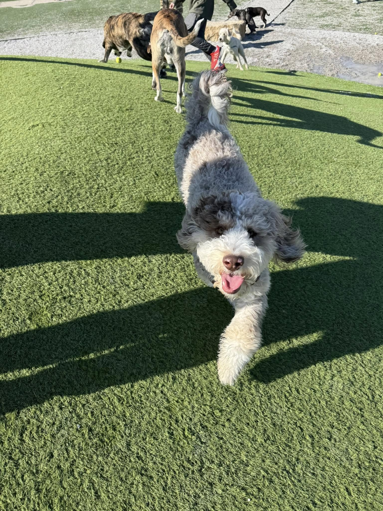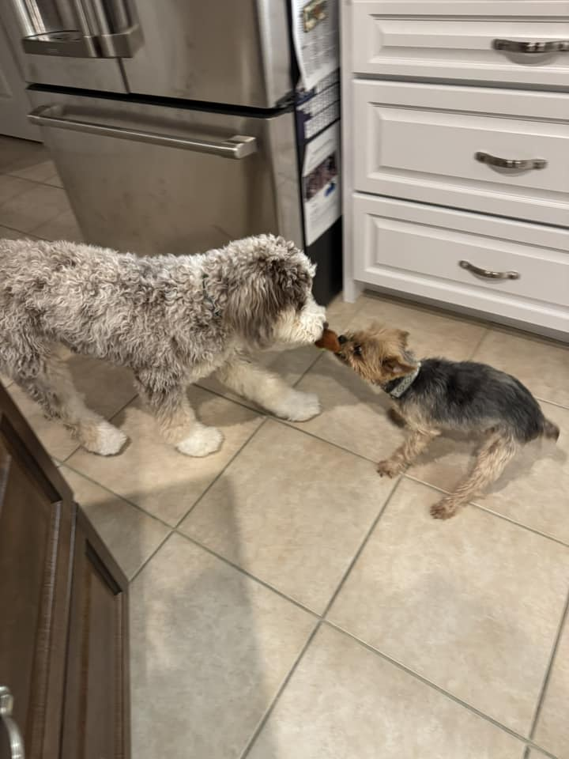
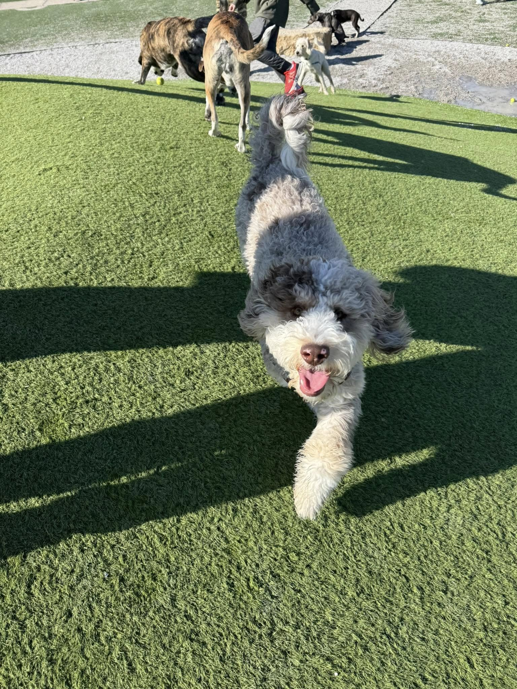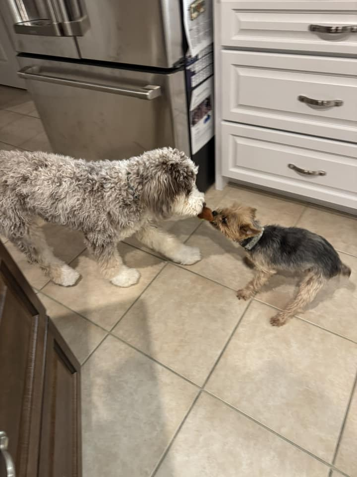
Sarah W.
Doodle Dandy Review: Wow, what great service we have received from Susan!! I did not expect to be able to ask so many questions before and after adoption. We are so grateful for the tips and tricks! We also LOVE the Congrats file!! It is so full of information! We have referenced it time and time again! The gift bag is so generous as well. The Snuggle Puppy is such a huge blessing because our puppy sleeps and naps with it all the time. We really believe that helped our transition to home – especially because he was already used to it! The blanket that smells like their litter is also so wonderful. We have adopted a pup from another breeder before and the service was NOTHING like Susan's. We received a small blanket when we left and that was nice, but they had Snuggle Puppies for sale (not as a gift). They would also not allow us to be in contact with other families that adopted from the same litter. The breeder contact mentioned there was another puppy adopted to our same town but they did not allow us to contact each other. It just felt very cold and sterile – nothing like Susan and Doodle Dandy. We appreciate that Susan is as available as we'd like her to be, she has always been very reachable and transparent. She's also encouraged us to engage with other families. It's so nice that we don't have to feel as though she's hiding something. So refreshing!!! Thank you, Susan!
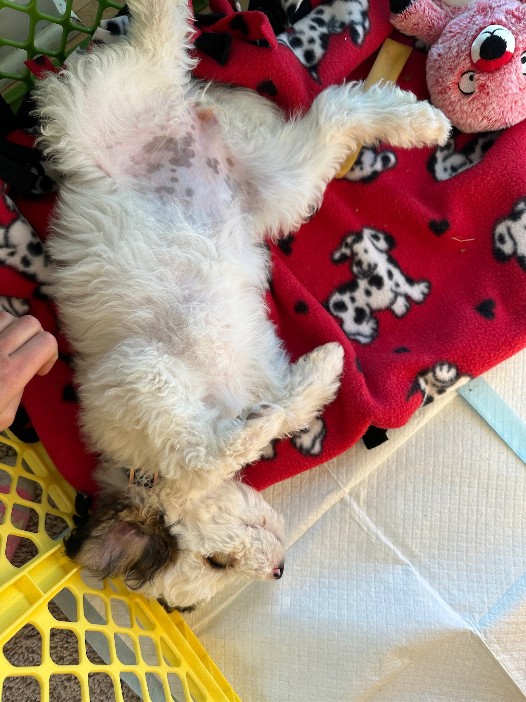
Greg G.
We saw Sophie online formerly Windy and we knew we had to have her so I started communicating with good dog and the breeder Susan, the breeder was phenomenal. We were in Chicago visiting family and were leaving early on Sunday, 20 October Susan's farm is only 20 minutes off of Route 40 easy to find my wife's name is Susan both Susan's share the same birthday we are both from Chicago the Windy city so we thought too many coincidences we knew it was meant to be, so we picked up Sophie on the way home to Arizona, she did excellent in the car. Excellent first night and has been improving every day. Sophie is an Aussiedoodle, an amazing breed listens well getting to know her settings her spot to go do her duty couldn't be more happy with Susan the breeder, doesn't just turn the dog over to you. I was impressed how she called the next morning. Asked how it went. I told her well the Puppy woke up twice and I stuck my hand inside the small travel carrier and just petted her back to sleep no accidents in the car on the way home minimal accidents so far for one week. She's doing great Susan checks back periodically to make sure there's anything you need or need to know I highly recommend good dog and I highly recommend Susan as a breeder
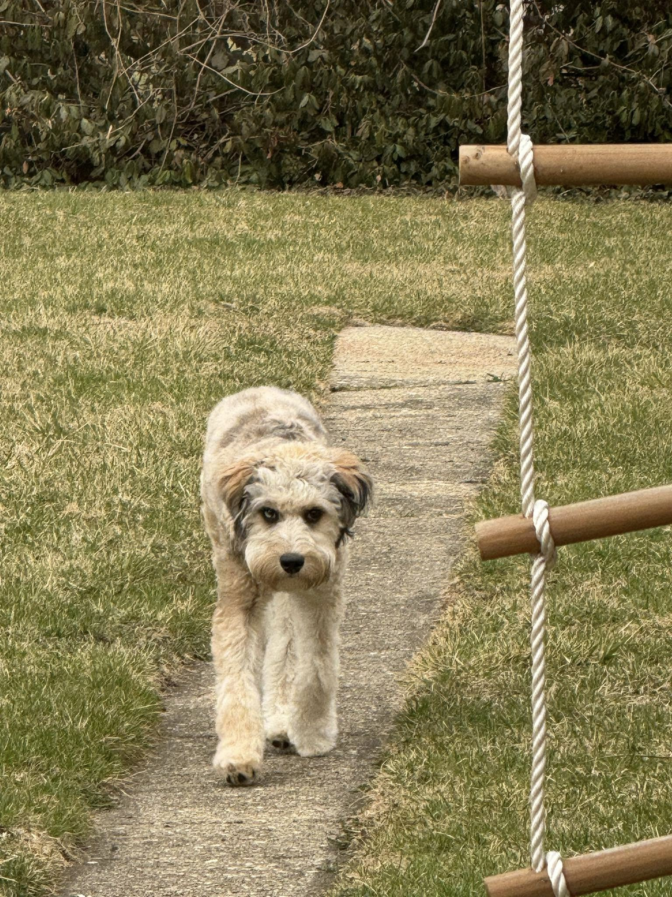 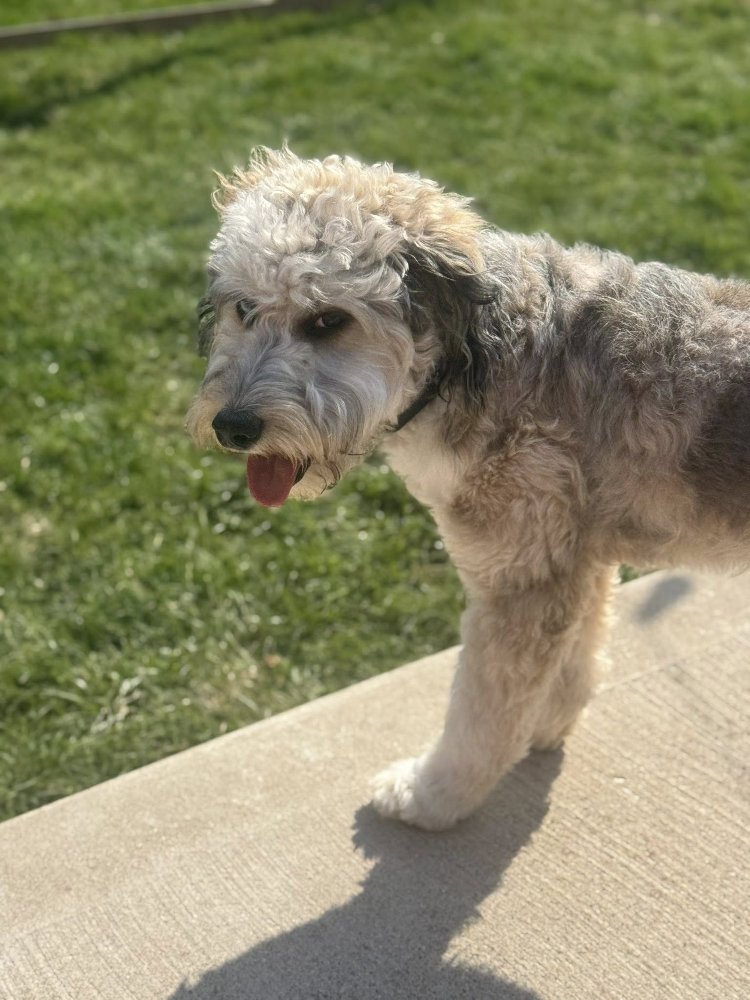
Phil A.
Susan was incredibly responsive—every time I had a question, she would reply almost instantly! Her love for her dogs truly shines through. She provided me with an amazing Congrats file packed with so much useful information; it will definitely be a go-to resource for me! I'm thrilled to have found Doodle Dandy through Good Dog! The entire process was smooth and easy. Susan also provided detailed preparations for bringing my girl home, making me feel confident and ready for the big day. Thank you, Doodle Dandy and Susan, for all the love and care you put into this. It's clear that these dogs are your passion. Now, Sweetie and I have some adventures to embark on! ~Phil
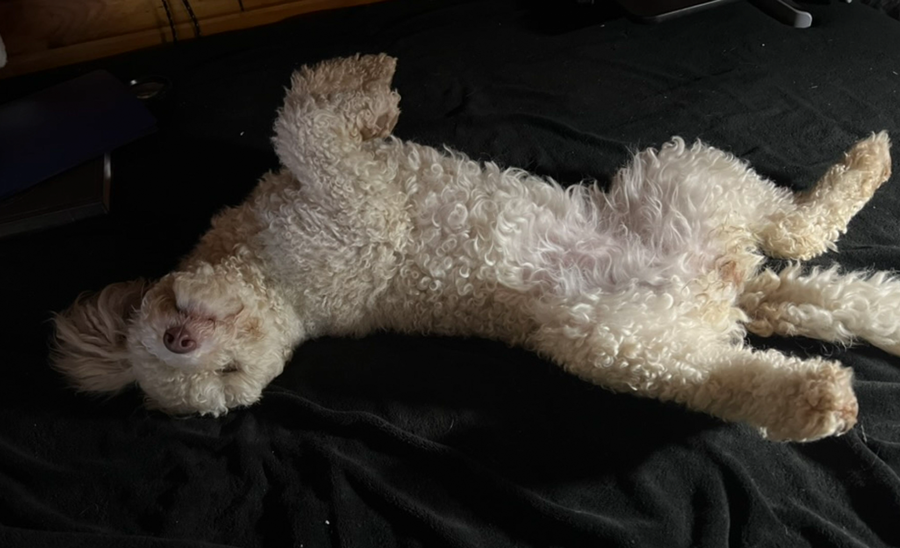
John S.
We had an amazing experience adopting our Aussiedoodle puppy, Loki, from Susan. She was incredibly helpful and knowledgeable throughout the entire process, providing us with all the information we needed to make an informed decision. Loki is a bundle of joy and has quickly become a beloved member of our family. We're so grateful to Susan for giving us the opportunity to bring this wonderful pup into our home.
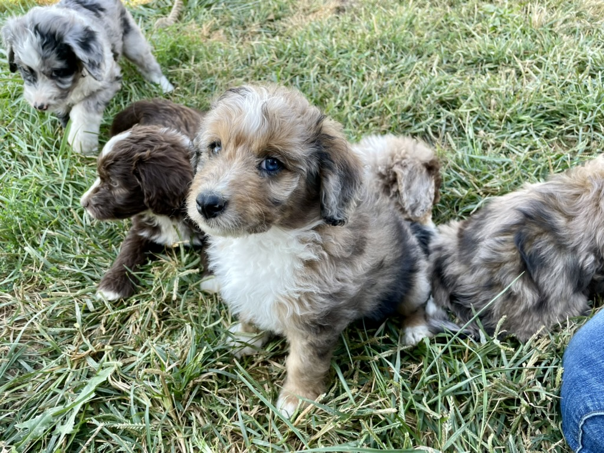 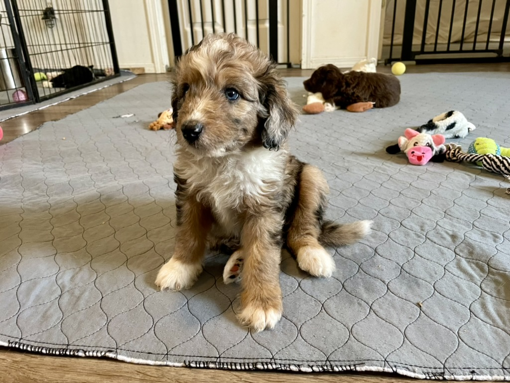
Cherizar W.
FIVE Stars... Susan changed my life with such an amazing pup. And thank you Chip and PZ for bringing Blitzen into this world. Susan's family went above and beyond ~ her son and friend drove Blitzen all the way to IL. I can tell her family raises their pups with a lot of love and attention. When we met Blitzen (3 mo. old) he would rest his nose on my nose and lock eyes the whole ride. Soon as we brought him home he would not stop with kisses :) Also ran through a tunnel (for agility training) without any training! Cannot wait to have fun with him and watch him grow. Susan included a gift bag that was perfect for the ride home (Blitzen loves sleeping on the cooling pad that has his mom's scent). We noticed my sister's dog was not shaking in the car for the first time because Blitzen was a role model - very calm in the car. They look like father and son, and are starting to mimic each other. Very grateful to Susan for this beautiful pup. When I wake up next to him and his "blizzard" hair I'm so grateful..

Marie H.
Our Puppy This is our third puppy from Doodle Dandy, and each experience has been exceptional! The level of care, attention to detail, and the extra efforts made for both the puppies and their new families are truly remarkable. Every time we bring home a puppy from you, I'm amazed at how smoothly they transition into our home. Wherever we go, people are always impressed by our Doodle Dandy puppy—not just because of their adorable looks, but also their wonderful temperament. The quality of your dogs, coupled with the extra love and care you provide, is beyond words. We genuinely feel like part of the Doodle Dandy "extend-a-pup" family, just as you always say! Thank you so much for trusting us with our new baby. — Marie
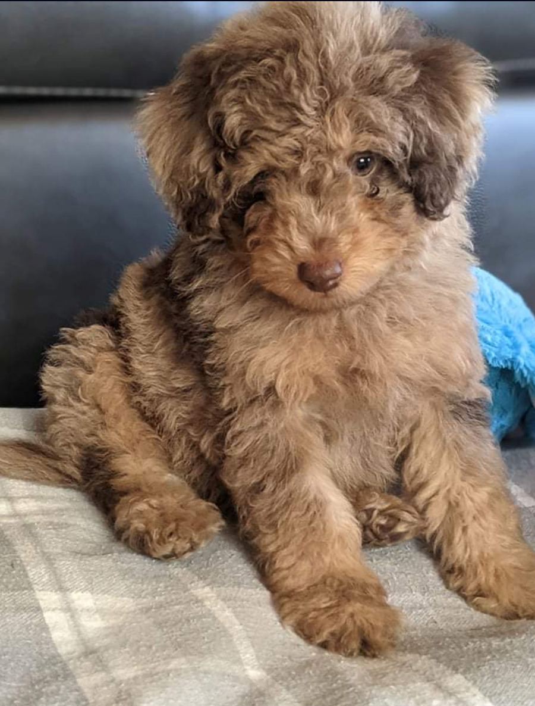
Redford G.
Thanks Susan for my beautiful Myst - she is everything I could have dreamed of. Thanks to Good Dog for this easy to use platform. Doodle Dandy is A+ "Head of the pack" Thanks again, Redford
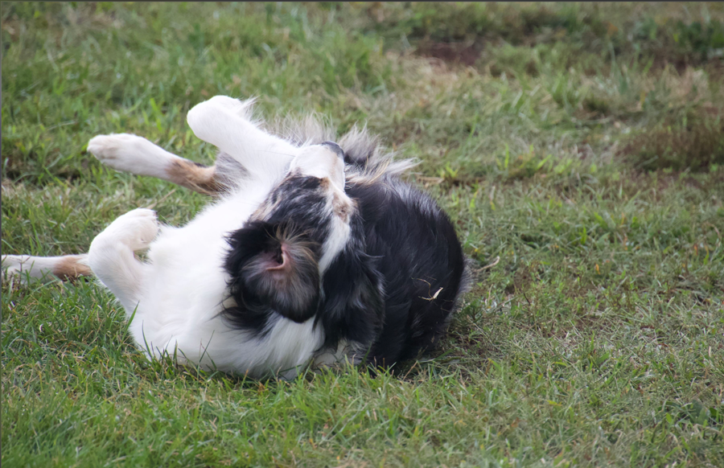
Holly P.
I found Susan through Good dog. I wanted to find a Aussiedoodle that was careful not to "over Aussiedoodle" and really treated the puppies like a lover of dogs. Susan was very responsive to all my questions. She could answer all my questions without hesitation and it was clear she knew the Aussiedoodle. She worked with me on a date for pick up and was flexible when I needed to change that date. She FaceTimed me to allow me to see my puppy's behavior & personality. I am very happy with Susan & with my sweet little Harper. She is happy, calm, & so loving. Very pleased with my sweet little girl!

Hannah S.
Susan was so wonderful to work with. You can tell how much she cares about the puppies and was very knowledgeable about our puppy and the breed. She was very responsive and easy to work with. Susan had already done some training and he has transitioned to our home beautifully. He is so well behaved and we absolutely adore our puppy. Susan he is such an Angel. He did so well in his crate overnight and is amazing at going potty outside. We absolutely adore him.
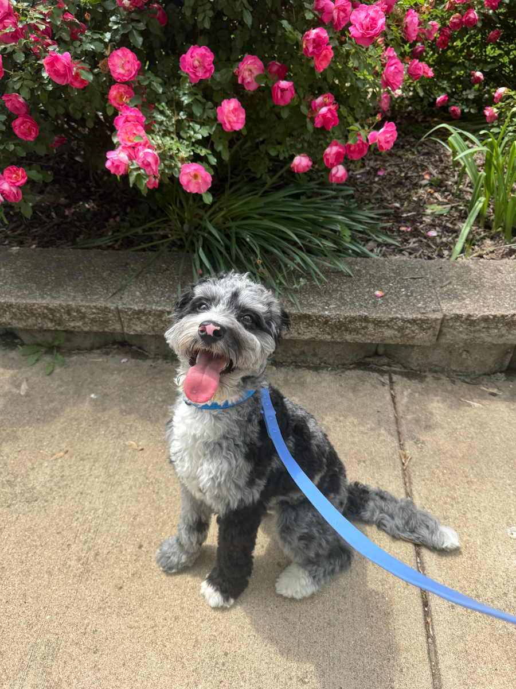 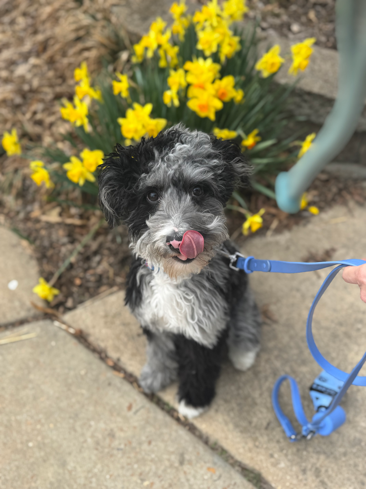
Felicia B.
Our experience with Susan at Doodle Dandy was nothing short of wonderful! From the moment we began the process of bringing Oakley home, Susan was there every step of the way. She kept us informed with constant updates, sent photos, and answered all our questions thoroughly. It's clear she truly cares about each puppy and each family she works with. Susan even went above and beyond to personally bring Oakley to us in Florida, making sure the transition was smooth. Now that Oakley is here, we're completely smitten! He has the sweetest, calmest personality but is still so playful and fun. It's obvious that Susan's love and care have shaped him into the perfect addition to our family. We're so grateful to Susan for her dedication, and we'd wholeheartedly recommend Doodle Dandy to anyone searching for their perfect pup!